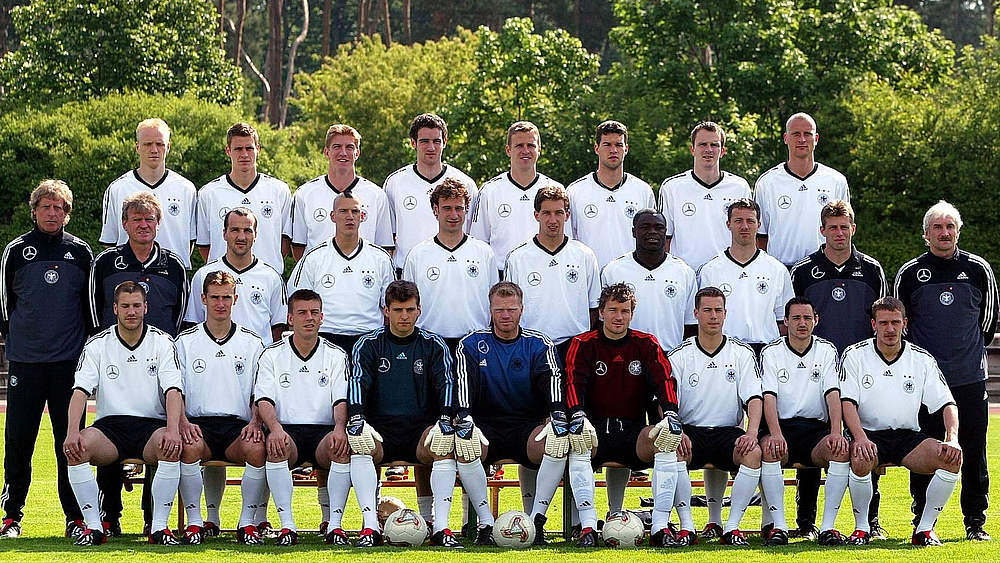

The German national team was so close to the Jules Rimet Trophy.

At the qualification stage, the national team once again gained 7 points and moved on to the next stage. They had a dramatic win against Saudi Arabia (8-0) in the first game they palyed. A draw with Republic of Ireland, 1-1 and then 2-0 beat Cameroon. In the knockout stage, Germany beat Paraguay, then United States, finally the host Korea with the same score (1-0). In the final, goalkeeper Oliver Kahn made mistakes that eventually lead to defeat. They lost two goals against Brazil and came back home with dissapointment.
After the turn of the century, the German national team became more and more diverse. Not only do the players who come from the former GDR started to play important roles (such as Michiael Ballack and Jörg Böhme), but players who were borned outside of Germany then migrant to this country also started to shine in the naitonal team. If you move the map slightly to the bottom, you could see the birthplace of Gerald Asamoah, Mampong, Ghana. Oliver Neuville is born in Locarno, Switzerland. He has a German father and a swiss mother who lives in the italian speaking area of Switzerland. He inheritage his last name from his grandfather who is a Belgian. Another striker Miroslav Klose first played for the national team in 2012. He was born in the Silesian city of Opole, Poland. His mother used to played for the Poland women's national handball team. Klose moved to Germany when he was 8 years old.